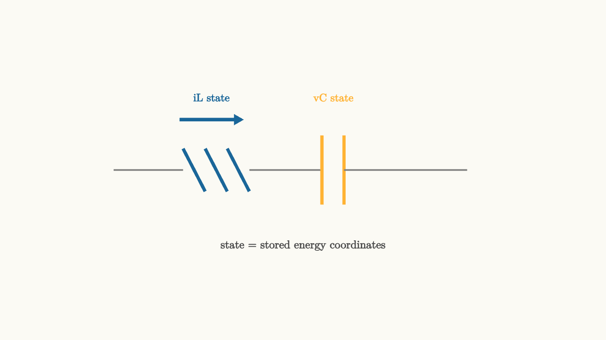

State Space Keeps Circuit Memory
Transfer functions are excellent for input-output behavior. Sometimes we need a more internal view. We want to know what energy is stored, how it moves, and how the circuit's memory changes from moment to moment.
State space is that view.
A state variable is a quantity that carries enough memory to predict the future when the input is known. In circuits, the natural choices are capacitor voltages and inductor currents. Capacitors remember charge. Inductors remember magnetic flux through current.

source
background = [0.985, 0.98, 0.955, 1]
camera = Camera(4.8b)
mesh diagram = block {
. stroke{GRAY, 2} Line(start: [-3.0, 0, 0], end: [-1.9, 0, 0])
. stroke{BLUE, 4} Line(start: [-1.9, 0.34, 0], end: [-1.55, -0.34, 0])
. stroke{BLUE, 4} Line(start: [-1.55, 0.34, 0], end: [-1.2, -0.34, 0])
. stroke{BLUE, 4} Line(start: [-1.2, 0.34, 0], end: [-0.85, -0.34, 0])
. stroke{GRAY, 2} Line(start: [-0.85, 0, 0], end: [0.3, 0, 0])
. stroke{ORANGE, 4} Line(start: [0.3, -0.55, 0], end: [0.3, 0.55, 0])
. stroke{ORANGE, 4} Line(start: [0.65, -0.55, 0], end: [0.65, 0.55, 0])
. stroke{GRAY, 2} Line(start: [0.65, 0, 0], end: [2.6, 0, 0])
. color{BLUE} Arrow(start: [-1.95, 0.8, 0], end: [-0.95, 0.8, 0])
. center{[-1.45, 1.15, 0]} color{BLUE} Text("iL state", 0.62)
. center{[0.48, 1.15, 0]} color{ORANGE} Text("vC state", 0.62)
. center{[0, -1.2, 0]} color{DARK_GRAY} Text("state = stored energy coordinates", 0.64)
}
"states"
play Fade(0.6)The standard form is
and
The vector $x$ contains the state. The input is $u$. The output is $y$. The matrix $A$ tells how the circuit's memory evolves on its own. The matrix $B$ tells how the input pushes the state. The matrix $C$ tells how the measured output reads the state. The matrix $D$ is any direct feedthrough from input to output.
A second-order circuit needs two coordinates
An RC circuit has one storage element, so one state is enough. An RLC circuit has two storage elements, so it needs two state variables. A common choice is
and
The pair $(i_L,v_C)$ locates the circuit in a state plane. A point in that plane says how much energy sits in the magnetic field and how much sits in the electric field.
With no resistor, energy would trade back and forth. The state point would orbit. With resistance, energy leaks away as heat, and the orbit spirals inward.
source
background = [0.985, 0.98, 0.955, 1]
camera = Camera(4.8b)
let StatePlane = |scale, col| block {
. stroke{LIGHT_GRAY, 1} Line(start: [-2.5, 0, 0], end: [2.5, 0, 0])
. stroke{LIGHT_GRAY, 1} Line(start: [0, -1.55, 0], end: [0, 1.55, 0])
. center{[2.25, -0.28, 0]} color{GRAY} Text("iL", 0.62)
. center{[0.4, 1.35, 0]} color{GRAY} Text("vC", 0.62)
. stroke{col, 4} ExplicitFunc(|t| scale * exp(-0.22 * (t + 2.4)) * sin(3.1 * (t + 2.4)), [-2.4, 2.4, 240])
}
"one state point"
mesh title = center{[0, 1.82, 0]} color{DARK_GRAY} Text("stored energy moves through state space", 0.62)
mesh path = StatePlane(scale: 0.95, col: BLUE)
mesh marker = center{[-1.25, 0.45, 0]} fill{WHITE} stroke{BLUE, 2} Circle(0.12)
mesh note = center{[0, -1.82, 0]} color{DARK_GRAY} Text("current and voltage together predict the next instant", 0.62)
play Write(0.8)
play Grow(0.5)
"damping"
path = StatePlane(scale: 0.55, col: ORANGE)
marker = center{[0.4, 0.15, 0]} fill{WHITE} stroke{ORANGE, 2} Circle(0.12)
note = center{[0, -1.82, 0]} color{DARK_GRAY} Text("resistance pulls the state toward rest", 0.62)
play Lerp(1.1)
"forced motion"
path = block {
. stroke{LIGHT_GRAY, 1} Line(start: [-2.5, 0, 0], end: [2.5, 0, 0])
. stroke{LIGHT_GRAY, 1} Line(start: [0, -1.55, 0], end: [0, 1.55, 0])
. stroke{GREEN, 4} ExplicitFunc(|t| 0.45 * sin(2.0 * t) + 0.25 * sin(4.2 * t), [-2.4, 2.4, 240])
}
marker = center{[1.3, 0.28, 0]} fill{WHITE} stroke{GREEN, 2} Circle(0.12)
note = center{[0, -1.82, 0]} color{DARK_GRAY} Text("the input keeps injecting energy", 0.62)
play Trans(1.0)
play Lerp(0.6)The slideshow compresses the geometry, but the principle is accurate. The state is a moving point. The circuit equation tells the velocity of that point.
State space handles many outputs
Transfer functions usually focus on one input and one output. State space handles multiple inputs and outputs naturally.
A power converter may have input voltage, switch duty cycle, inductor current, capacitor voltage, and load current. A sensor front end may have several internal nodes and several measured outputs. State space keeps those variables in one organized model.
The same form also connects circuit theory to control theory. Stability depends on the eigenvalues of $A$. Controllability asks whether inputs can move the state where we need it. Observability asks whether measurements reveal the state well enough.
Initial conditions are first-class citizens
Laplace transforms can include initial conditions, but state space makes them unavoidable in a good way. The initial state is simply $x(0)$.
If a capacitor is already charged, that is one coordinate of $x(0)$. If an inductor already carries current, that is another coordinate. The future response is the sum of the input-driven motion and the motion caused by stored energy.
This matters in switching circuits, filters after power-up, and feedback systems after disturbances. A circuit is never only a transfer function floating in the abstract. It has a memory state, and state space gives that memory a coordinate system.